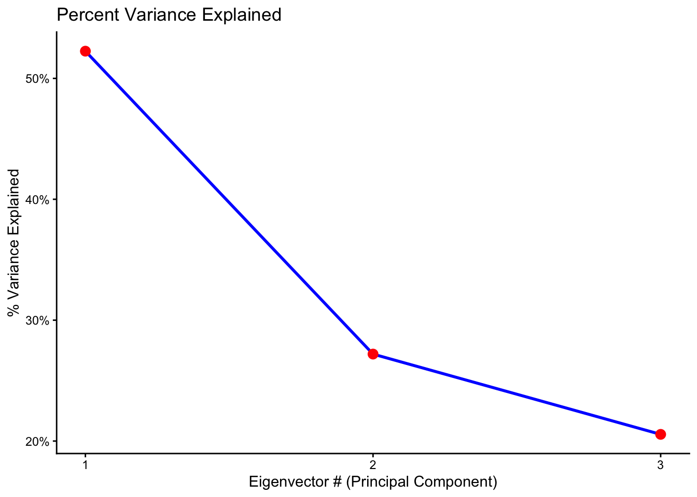
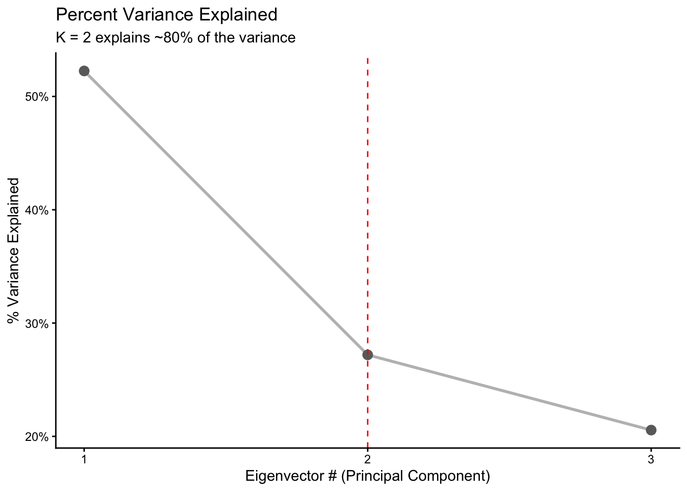

── Conflicts ────────────────────────────────────────── tidyquant_conflicts() ──
✖ zoo::as.Date() masks base::as.Date()
✖ zoo::as.Date.numeric() masks base::as.Date.numeric()
✖ PerformanceAnalytics::legend() masks graphics::legend()
✖ quantmod::summary() masks base::summary()
ℹ Use the conflicted package (<http://conflicted.r-lib.org/>) to force all conflicts to become errors
library(tidyverse)
Warning: package 'ggplot2' was built under R version 4.4.3
Warning: package 'dplyr' was built under R version 4.4.3
── Attaching core tidyverse packages ──────────────────────── tidyverse 2.0.0 ──
✔ dplyr 1.2.0 ✔ readr 2.1.5
✔ forcats 1.0.0 ✔ stringr 1.5.1
✔ ggplot2 4.0.2 ✔ tibble 3.2.1
✔ lubridate 1.9.3 ✔ tidyr 1.3.1
✔ purrr 1.0.2
── Conflicts ────────────────────────────────────────── tidyverse_conflicts() ──
✖ dplyr::filter() masks stats::filter()
✖ dplyr::first() masks xts::first()
✖ dplyr::lag() masks stats::lag()
✖ dplyr::last() masks xts::last()
ℹ Use the conflicted package (<http://conflicted.r-lib.org/>) to force all conflicts to become errors
library(dplyr)
# download market returns for portfolio --> lets just use 3-4 stocks to keep it simple# [ (n^2 - n) / 2 ] + n days, where N = number stocks in portfolio# GOOG, BG, RTX --> different sectors so have even less correlation (in theory)goog <-tq_get("GOOG")bg <-tq_get("BG")rtx <-tq_get("RTX")goog_1 <- goog |>mutate(daily_ret = ((adjusted -lag(adjusted))/lag(adjusted))*100)bg_1 <- bg |>mutate(daily_ret = ((adjusted -lag(adjusted))/lag(adjusted))*100)rtx_1 <- rtx |>mutate(daily_ret = ((adjusted -lag(adjusted))/lag(adjusted))*100)head(goog_1)
#standarise the data. call it Z.Z <- returns_wide |>select(-date) |>scale()
# create correlation matrix from Z call it cor_Z. can skip cov step.cor_Z <-cor(Z)
# calculate eigenvalues and eigenvectors from corr_zeigen <-eigen(cor_Z)eigenvalues <- eigen$valueseigenvectors <- eigen$vectorsvar_explained <- eigenvalues /sum(eigenvalues)cum_var_explained <-cumsum(var_explained)
#update: line graph not to be used. scree plot is for eigenvalues #https://www.r-bloggers.com/2023/10/creating-a-scree-plot-in-base-r/#update: use tibble() not data.frame() for cleaner/better output.#https://www.listendata.com/2024/05/tibble-vs-dataframe-with-examples.htmlscree_df <-tibble(PC =paste0("PC", 1:length(eigenvalues)),num_pc =1:length(eigenvalues),VarExplained = var_explained,CumVar = cum_var_explained)ggplot(scree_df, aes(x = num_pc, y = VarExplained)) +geom_line(color ="blue", size =1) +geom_point(color ="red", size =3) +scale_x_continuous(breaks =1:3) +scale_y_continuous(labels = scales::percent) +labs(title ="Percent Variance Explained",x ="Eigenvector # (Principal Component)",y ="% Variance Explained" ) +theme_classic()
Warning: Using `size` aesthetic for lines was deprecated in ggplot2 3.4.0.
ℹ Please use `linewidth` instead.

# choose k eigenvectors based on previous outputs.ggplot(scree_df, aes(x = num_pc, y = VarExplained)) +geom_line(color ="grey", size =1) +geom_point(color ="grey42", size =3) +geom_vline(xintercept =2, colour ="red", linetype ="dashed") +scale_x_continuous(breaks =1:3) +scale_y_continuous(labels = scales::percent) +labs(title ="Percent Variance Explained",subtitle ="K = 2 explains ~80% of the variance",x ="Eigenvector # (Principal Component)",y ="% Variance Explained" ) +theme_classic()

#create a matrix called V including only eigenvectors 1->kV <- eigenvectors[, 1:2]
# dot product - multiply Z with V. these are the principal components. call it PC_M# a*b = (a1b1)+(a2b2)+...+(anbn)PC_M <- Z %*% V
# double check PC_M has same time period as ZPC_M_df <-as_tibble(PC_M) |>mutate(date = returns_wide$date) |>relocate(date) # Moves date to the first column
Warning: The `x` argument of `as_tibble.matrix()` must have unique column names if
`.name_repair` is omitted as of tibble 2.0.0.
ℹ Using compatibility `.name_repair`.
# run OLS on every asset in portfolio. to do so use a loop.# follows the structure: model <- lm(Asset1 ~ PC1 + PC2 + PC3, data = df) model_data <- returns_wide |>inner_join(PC_M_df, by ="date")model_goog <-lm(GOOG ~ PC1 + PC2, data = model_data)model_bg <-lm(BG ~ PC1 + PC2, data = model_data)model_rtx <-lm(RTX ~ PC1 + PC2, data = model_data)summary(model_goog)
Call:
lm(formula = GOOG ~ PC1 + PC2, data = model_data)
Residuals:
Min 1Q Median 3Q Max
-3.7916 -0.2940 0.0103 0.2797 3.9346
Coefficients:
Estimate Std. Error t value Pr(>|t|)
(Intercept) 0.099053 0.011045 8.968 <2e-16 ***
PC1 -0.978428 0.008823 -110.891 <2e-16 ***
PC2 1.355842 0.012230 110.859 <2e-16 ***
---
Signif. codes: 0 '***' 0.001 '**' 0.01 '*' 0.05 '.' 0.1 ' ' 1
Residual standard error: 0.5741 on 2699 degrees of freedom
Multiple R-squared: 0.9011, Adjusted R-squared: 0.901
F-statistic: 1.229e+04 on 2 and 2699 DF, p-value: < 2.2e-16
#install.packages("stargazer")library(stargazer)
Please cite as:
Hlavac, Marek (2022). stargazer: Well-Formatted Regression and Summary Statistics Tables.
R package version 5.2.3. https://CRAN.R-project.org/package=stargazer
stargazer(model_goog, model_bg, model_rtx, type ="text", title ="PCA Beta Output")